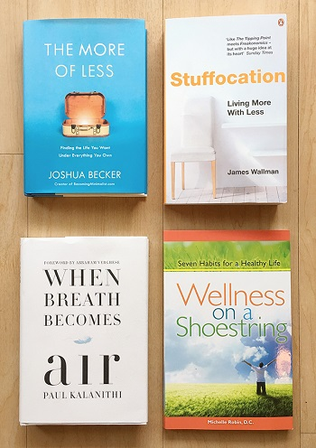

Books about minimalism:
- "Goodbye Things:On Minimalist Living" by Fumio Sasaki
- "The Joy Of Less" by Francine Jay
- "The Paradox of Choice: Why More Is Less" by Barry Schwartz
- "Essentialism:The Disciplined Pursuit of Less" by Greg McKeown
- "A Simplified Life:Tactical Tools for Intentional Living" by Emily Ley
- "The Life-Changing Magic of Tidying Up" by Marie Kondo
- "Minimalism:Live a Meaningful Life" by Joshua Fields Millburn and Ryan Nicodemus
For more books on minimalism join our Book Club every Wednesday at 5pm, University Library.
